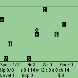

iLarn
ULarn for PalmOS
ULarn for PalmOS
iLarn is a game for the PalmPilot (or other handheld computer that runs the Palm OS). It is open-source freeware available under the GPL. It is derived from Ularn, also known as Ultra-Larn.
Ularn, by Phil Cordier, is a "rogue-like" game. These games are text-based and have a familiar premise: wander around in a dungeon, collect treasure, deal with bad-tempered monsters, try to finish a quest. Ularn has been around since 1989 or so and is based on an older (1986) game, Larn, by Noah Morgan.



What is iLarn?
Current status
Download iLarn
How to play;
town;
keyboard shortcuts
Configuring color
How to get source